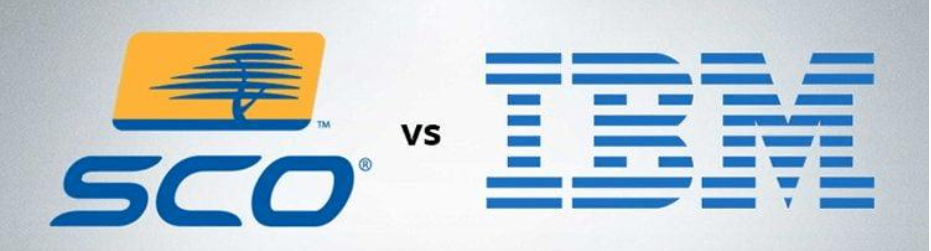

After 18 years of prosecution, the Linux source code "plagiarism" case was settled with us $14.25 million
The legal dispute between SCO and IBM has lasted for 18 years. For 18 years, the case has been trying to determine the ownership of UNIX and Linux. With the proposal of the settlement agreement, this complex and ancient case will finally come to an end.
Origin of contradiction
The case began in 2003, but it can be traced back. In 1998, IBM, Santa Cruz operation (SCO - x86 CPU UNIX supplier) and other companies cooperated to create the Monterey project, which aims to develop a UNIX version that can support a variety of hardware platforms. This is exactly the original intention of the Linux community.
In 2001, IBM decided that Linux was the future direction, so it withdrew from the Monterey project and even acquired some companies involved in the project. Shortly after exiting the Monterey project, IBM contributed some of its intellectual property rights to Linux.
SCO opposes this approach, claiming that IBM donated its assets to the open source Linux code base without authorization. On March 6, 2003, SCO filed a lawsuit against IBM in the United States, claiming US $1 billion and accusing IBM of greatly "devaluing" its UNIX operating system. The amount of damages allegedly increased later to $3 billion and then to $5 billion. In May 2003, SCO group sent a letter to Fortune 1000 and Global 500 enterprises. SCO said in the letter that if Linux is used, it may bear legal liability.
The contradiction between the two sides continued to escalate. IBM and Red Hat Linux dealers began to sue SCO. SCO began to threaten Linux users without SCO UNIX license, and sued Novell, autozone and DaimlerChrysler.
Although SCO finally filed for bankruptcy and some claims were rejected, the dispute between SCO and IBM has not been really resolved. IBM has been fighting, and the owners who inherited SCO's intellectual property have been trying to win the lawsuit from a new perspective.
Reach a settlement
This case can be so protracted, mainly because of its attractive "bonus" - the ultimate winner means the opportunity to obtain partial ownership of Linux. Given that Linux is the core of thousands of smartphones and countless devices, its royalties must be huge.

But that dream seems to have been dashed - at least for SCO's heirs. According to the documents submitted to the Delaware bankruptcy court last week, as long as $14.25 million is paid, all remaining claims in the Utah lawsuit can be settled, and the case can be settled.
This was proposed by the bankruptcy trustee of TSG group（ In April 2011, unxis acquired SCO group and renamed it TSG group.) If an agreement is reached, the lawsuit between TSG and IBM will be over.
The trustee believes that the way of reconciliation is most in the best interests of the bankrupt party and creditors, and proposes to reach a settlement. Because "the ultimate success of the trustee's claim against IBM is uncertain", even if the lawsuit is won and it is confirmed that the incident more than ten years ago caused harm to SCO, the amount of compensation may not be higher than the settlement amount. Although the trustee can continue to appeal, it may pay a price - even higher if IBM appeals.
According to the U.S. bankruptcy court in Delaware, the first creditors' meeting will be held on September 22, 2021. This ancient case is finally coming to an end.